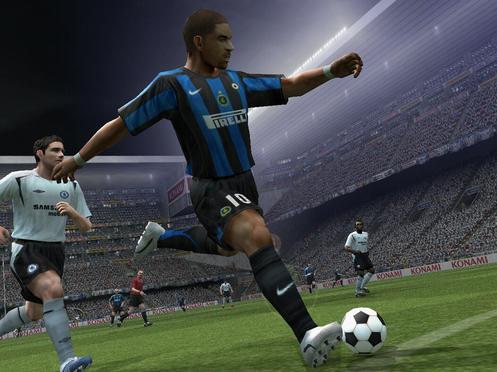
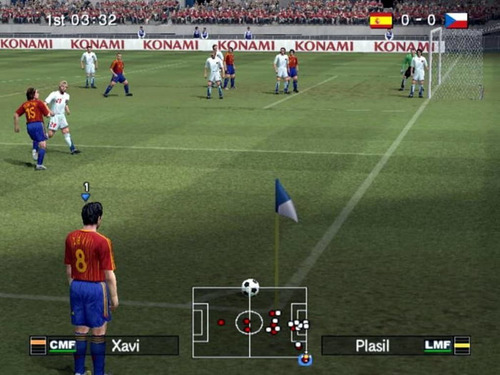

Pro Evolution Soccer 6
 
Pro Evolution Soccer 6 (conocido como World Soccer: Winning Eleven 10 en su versión japonesa o Winning Eleven: Pro Evolution Soccer 2007 en su versión estadounidense) es un videojuego de fútbol que se puso a la venta en el año 2006. Fue el sexto videojuego de la serie Pro Evolution Soccer y, además, fue el primero que se vendió para Nintendo DS. En la portada del videojuego aparece Roque Santa Cruz (en la de Alemania), Luca Toni (en la de Italia), Maciej Żurawski (en la de Polonia), Deco (en la de Portugal), Cesc Fàbregas (en la de España),1 Kim Källström (en la de Suecia), John Terry (en la del Reino Unido),2 Thierry Henry2 y Didier Drogba (en la de Francia), John Aloisi (en la de Australia),3 Zico y Shunsuke Nakamura (en la de Japón) y la selección coreana en la de (Corea del Sur).
COMPRAR